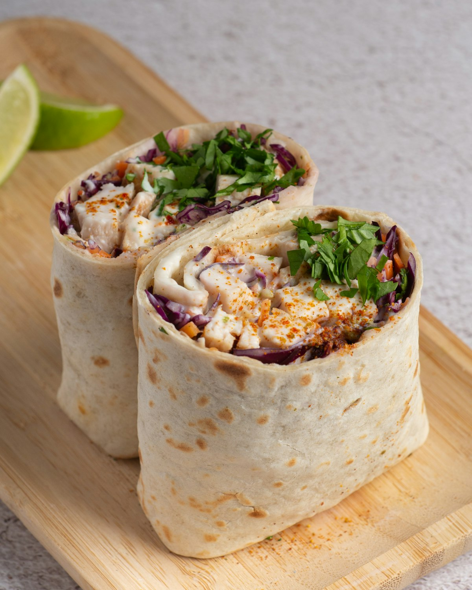

California Burritos
Choice of Jalapeño Cheddar, Spinach Herb, Chipotle, or Flour tortillas loaded with grilled steak, citrus chicken, or pork carnitas and cilantro-lime rice.
Explore Burritos →Welcome to Johnny Burrito, Uptown Charlotte’s cult-favorite California-style burrito bar for over 25 years. Hidden on the plaza level beneath Two Wells Fargo Center, we roll monster 13-inch flavored tortillas with grilled steak, fresh guacamole, and scratch hot sauces.

Custom-rolled 13-inch tortillas, lightning speed lunch lines, and genuine Charlotte warmth.
Choice of Jalapeño Cheddar, Spinach Herb, Chipotle, or Flour tortillas loaded with grilled steak, citrus chicken, or pork carnitas and cilantro-lime rice.
Explore Burritos →Authentic scratch masa steamed in real corn husks with seasoned shredded pork or chicken and red chili gravy. Famous for selling out by 12:30 PM.
Tamale Schedule →Never been here before? Call out “I’m a rookie!” and our crew will give you a rookie card, a warm cheer, and walk you down the line.
Read The Story →Every Tuesday and Friday morning, our kitchen steams hundreds of fresh handmade corn-husk tamales. Tender masa filled with slow-cooked shredded pork or shredded chicken, smothered in rich red enchilada sauce and cotija cheese.
Learn About Tamale Days →
Call (704) 371-4448 for group office lunch orders, fast pickup, or corporate catering drops across Uptown Charlotte.
Hours, Directions & Office Orders →